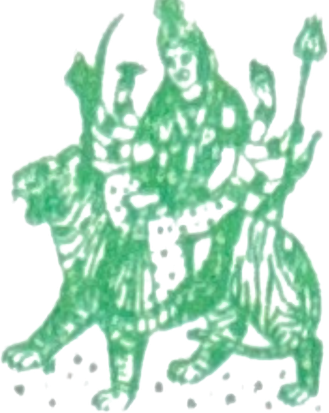

Clear
Print / Save as PDF
SRI DURGA VASTU, ASTROLOGY & PALMISTRY
Astrologer :
Krishna Balaram Veeravalli
Jyothishya Visharada

Rajiv Nagar Colony,
K. Samudrapu Gattu,
Attili, West Godavari Dist. A.P.
Cell : 9000031119
Ref :
Date :
D.O.B
T.O.B
P.O.B
Delivery
Normal / Operation
శ్రీరస్తు
శుభమస్తు
దీర్ఘాయురస్తు
స్వస్తిశ్రీ చాంద్రమాన
నామ సంవత్సర
మాస శు॥/బ॥
వారం
అనగా తే
తేది ఉదయం / పగలు / సాయంత్రం / రాత్రి
గం
ని॥లకు
నక్షత్రయుక్త
లగ్నమందు చి॥శ్రీ॥శ్రీమతి॥కుమారి॥
శుభజననం.
మంగళం మహత్
శ్రీ శ్రీ శ్రీ శ్రీ శ్రీ
రాశి
అంశ
సం॥ - నెల - రో॥
జన్మ నక్షత్రం
లగ్నం
జన్మ రాశి
దశా శేషం :
జన్మ కాల గ్రహ సంపత్తి :
లగ్నం
రవి
చంద్ర
కుజ
బుధ
గురువు
శుక్ర
శని
రాహు
కేతు
S
U
B
మహాదశాయాం
సం॥ - నెల - రో॥
ప్రస్తుత - అంతరములు
సం॥ - నెల - రో॥
యోగములు - ఫలితములు
గోచార రీత్యా,
bad periods ( Roughly)